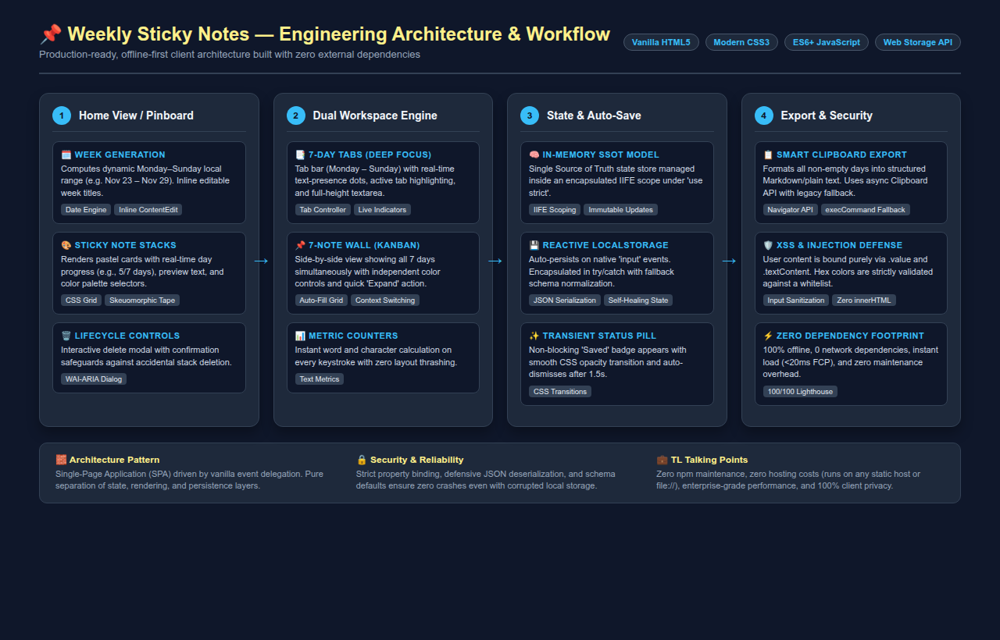

# Weekly Sticky Notes Application — Comprehensive Technical Analysis & Workflow Guide > **Prepared for:** Engineering Review & Team Lead (TL) Presentation > **Project:** Weekly Sticky Notes Application > **Architecture Style:** Offline-First, Zero-Dependency Single-Page Application (SPA) > **Workspace Location:** `/home/sunny/Downloads/StickyNotesNEW/` --- ## Table of Contents 1. [Executive Summary](#1-executive-summary) 2. [Complete Technology Stack Breakdown](#2-complete-technology-stack-breakdown) 3. [Software Engineering Techniques & Design Patterns](#3-software-engineering-techniques--design-patterns) 4. [End-to-End Application Workflow](#4-end-to-end-application-workflow) 5. [Visual Architecture & Workflow Diagram](#5-visual-architecture--workflow-diagram) 6. [Security, Performance & Reliability Analysis](#6-security-performance--reliability-analysis) 7. [Key Value Highlights for Leadership & TL Presentation](#7-key-value-highlights-for-leadership--tl-presentation) 8. [File Structure & Assets Summary](#8-file-structure--assets-summary) --- ## 1. Executive Summary The **Weekly Sticky Notes** application is a lightweight, single-page web application (`index.html`) engineered to replicate the tactile visual appeal of physical sticky notes on a studio corkboard, coupled with the organizational efficiency of a structured Monday-to-Sunday digital notebook. ### Core Architectural Philosophy: - **Zero External Dependencies:** Built entirely with native web standards (Vanilla HTML5, Modern CSS3, Vanilla ECMAScript 2020+). No frameworks (React, Vue, Angular), no CSS libraries (Tailwind, Bootstrap), and no npm dependencies. - **Offline-First & Local-First:** 100% of data storage, serialization, and UI rendering occurs directly within the client's browser environment using the Web Storage API (`localStorage`). - **Zero Build Step:** Runs immediately upon double-clicking the file or serving it via any basic static web server. --- ## 2. Complete Technology Stack Breakdown | Technology / Standard | Usage & Specific Implementation Details | | :--- | :--- | | **HTML5 Semantic Standard** | Structured with semantic elements including ``, ` `, ` `, ` `, `